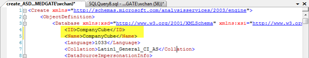
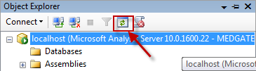
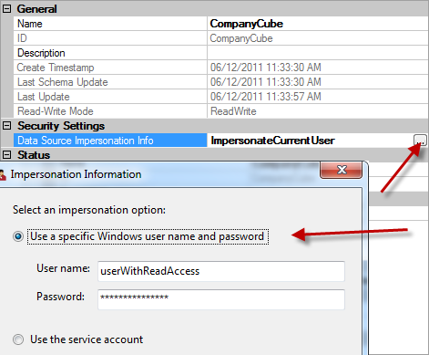

The script folder of the Cority installation package contains a script file called Cube_Create_2018.2.xmla. This file is all you need to create a ready-to-use cube database.
From the menu bar, go to File > Open > File. Then open the Cube_Create_2018.2.xmla file. SSMS will open the script in a new window.
Change the ID and the Name attribute of the xml file to suit your needs. Give them the same value, and keep the value as short as possible.

Press F5 to execute the script. Wait for SSMS to finish. When it is finished, it will display the following at the bottom:
Click the refresh button to refresh the database. You should see that the newly created cube database now exists under Databases.

Right-click the newly created database, click properties, and click the “…” box of Data source Impersonation Info. In the Impersonation Information dialog box, choose “Use a specific Windows user name and password”, and enter the credentials of the user that has read access to your Cority relational database
Click OK. On the Database Properties dialog box, click OK again.

Expand your database, then expand “Data Sources”. Right-click “Cority”, and then right-click Properties. Under “Impersonation Info”, click the “…” button, and then under the Impersonation Information dialog box, repeat step 5.
Click the “…” of Connection String. In the Connection Manager dialog box, enter the name of the server where Cority relational database is hosted, and then select Cority’s database under “Connect to a database”. Input the information as required to connect to the relational database. Click OK. On the Data Source Properties dialog box, click OK again.
Right-click the cube database, and click Process. On the Process Database dialog box, click OK. The Analysis Service will start reading data from the relational database and constructing the cube database. Take note of the length of processing time. This is approximately how much time your cube will take to refresh its data when you run the cube rebuilding client. As the relational database grows, the processing time of your cube database will increase.
Go to your Cority virtual directory, and under config > properties.config, modify nhOlapDataSource to be the url of the msmdpump.dll and nhOlapDatabase to be the name of the cube database you defined in step 2.